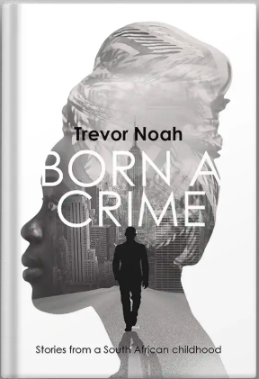
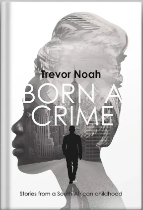

Read for yourself
1.Identity, Belonging & Exclusion
Instance one: When Trevor went to school at H.A Jack primary school.
First he was taken to 'A class', in which almost all of them were white, then on the playground he met alot of black kids but he had known to speak their different languages and so it got easier tointeract with them. Trevor says “Suddenly I knew who my people were and I wanted to be with them”(pg.58). “I'd never had to choose, but when I was forced to choose, I chose black. The world saw me as colored but I didn't spend my life looking at myself but at the people who surrounded me, and that is how I saw myself(pg. 59)”. When he realized that all the black kids were put in a separate class,, he chose to identify with them rather than the white students in his class. Trevor goes back and forth with the school counselor about switching classes and he was not convinced to stay in the white class despite the counselor telling him that choosing to leave A class would have a great impact on his future. Here, Trevor exudes a strong sense of identity by choosing to identify with the black kids despite his skin color. When he spoke with them in the different languages, the other students felt like he belonged with them and they welcomed him in their groups. In our society today, many people choose to associate themselves with the majority and they end up losing themselves when they are trying to fit in. Trevor Noah teaches us not to compromise our identity just because whichever group you associate with is seen at a different light.